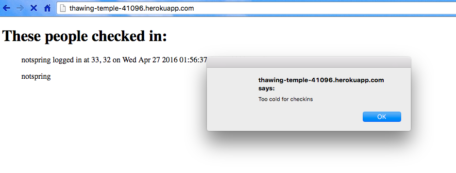
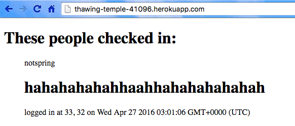
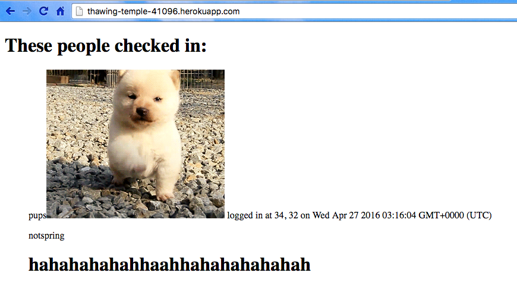

This is a security assessment of Marcus Mok's website:
This assesses the website for any security breaches. It lists fours issues in security and the recommended steps to avoid these security risks. This assessment looks at the website not only at its current state, but how the current security risks are amplified if the data on the site evolves.
First, the code was tested using the "black box" method. Attacks were performed using curl without looking at the source code. Then, the source code was inspected for vulnerabilities. The code was assessed for issues such as logical errors and vulnerabilities to invalid input.
The site does check the user input to make sure that it is valid latitude and longitude. However, the site is of great risk of attackers modifying the /sendLocation POST request.
1. Cross-Site Scripting
Severity: High
This makes the site vulnerable to attack. Anybody can insert JavaScript code into the website and manipulate its contents.
curl --data "login=notspring<script>alert('Too cold for checkins')</script>&lng=32&lat=33" https://thawing-temple-41096.herokuapp.com/sendLocation . Any injected code that the program was not intended to run will affect all users of the site. Users presented with the fraudulent information

2. HTML Injection
Severity: High
Similar to issue one, this makes the site vulnerable to the insertion of code by attackers. Attackers will be able to manipulate the content of the site and post fraudulent data.
curl --data "login=notspring<h1>hahahahahahhaahhahahahahahah</h1>&lng=32&lat=33" https://thawing-temple-41096.herokuapp.com/sendLocation it resulted in inserting a header on the page. The checkin is out of format and disrupts the page.

The situation can be escalated by running curl --data "login=pups<img src="http://static.tumblr.com/q8dfwso/cTOm7x5ih/puppies.gif" alt="puppies">&lng=32&lat=33" https://thawing-temple-41096.herokuapp.com/sendLocation . Now an animated image has been inserted into the page as well as the text.

3. Secure Login
Severity: Medium
Currently, there are no severe issues without having a secure login. However, if the website held other use information -- such as their bank account number, SSN, or home address -- it would be very dangerous. That information is currently accessible to any user.
The data stored for this website is currently not of high risk. However, if the site were to hold personally identifiable information, the issues listed above would be of high severity. The recommendations are quick simple solutions to prohibit attackers from manipulating the site content. It would be necessary to implement controls to MongoDB to maintain the proper user privileges, particularly if the information is of high-risk. And most importantly,
Please, never ever ever trust user input.